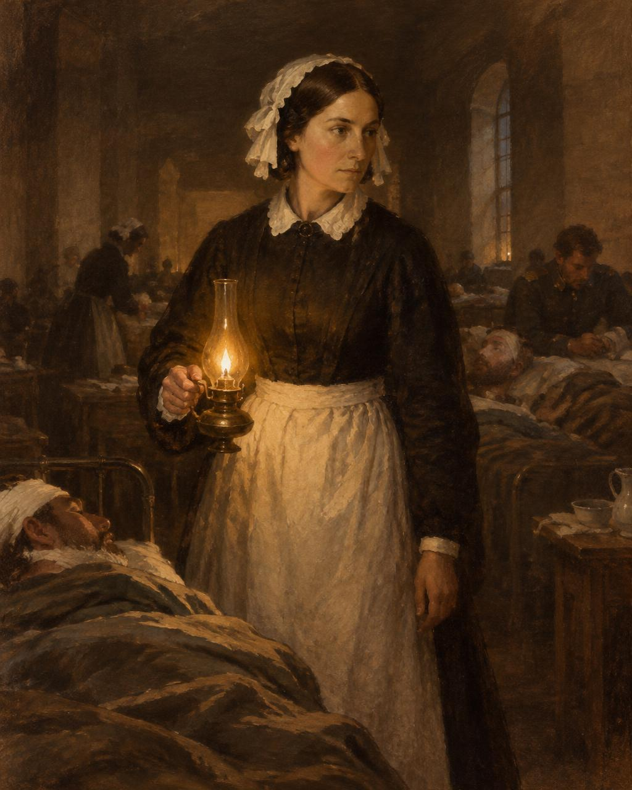
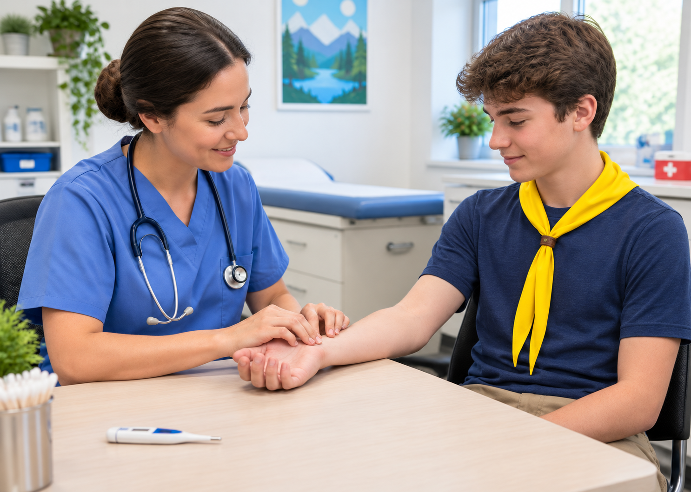
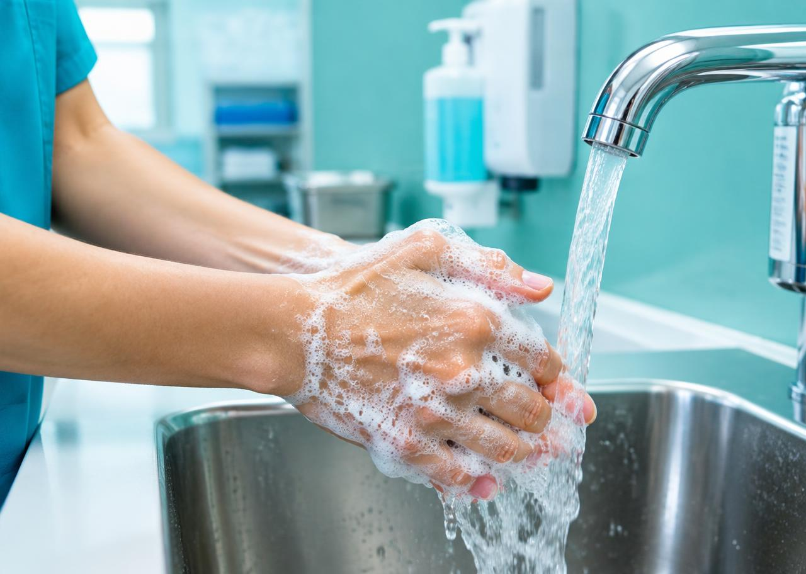
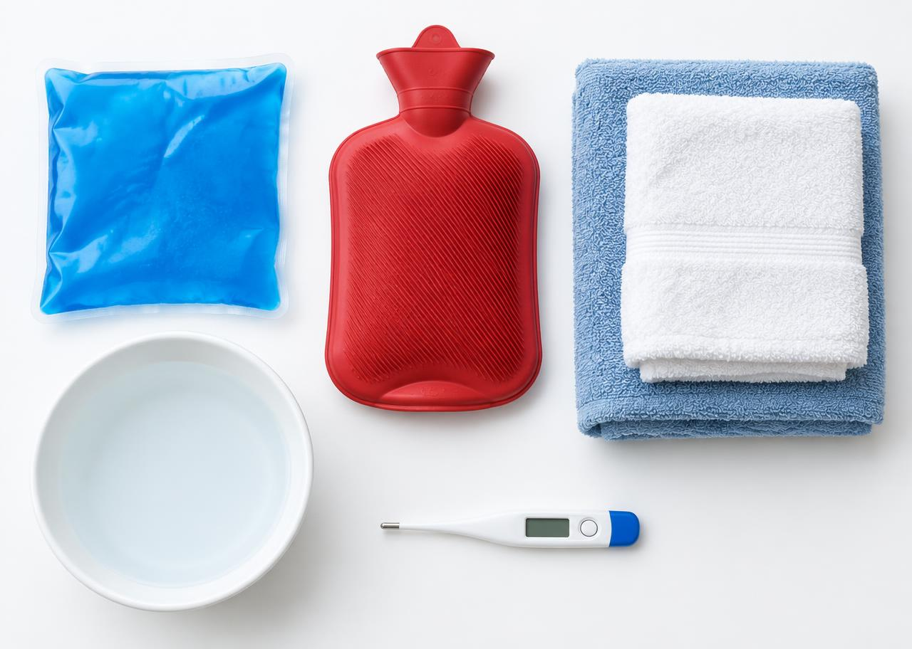

Um guia em formato de revista com tudo o que você precisa saber para conquistar a especialidade: história, profissão, sinais vitais, febre, contágio, higiene das mãos, cuidados com o acamado e compressas.
Editorial
Cuidar é uma das formas mais antigas de amor ao próximo. A enfermagem transformou esse gesto em ciência — e todo desbravador pode aprender o básico para ajudar em casa, no clube e no acampamento. Jesus passou grande parte do Seu ministério curando; servir aos doentes é seguir Seus passos.

Perfil · A fundadora
Florence Nightingale (1820–1910) foi uma enfermeira britânica, nascida em Florença, na Itália, considerada a fundadora da enfermagem moderna. De família rica, contrariou a sociedade da época ao decidir dedicar a vida ao cuidado dos doentes, que acreditava ser um chamado de Deus.
Na Guerra da Crimeia (1854), liderou 38 enfermeiras no hospital militar de Scutari (Turquia). Ao melhorar a higiene, a ventilação, a alimentação e a organização, ajudou a reduzir a mortalidade dos soldados de cerca de 42% para aproximadamente 2%.
“A enfermagem é uma arte; e, para realizá-la como arte, requer uma devoção tão exclusiva, um preparo tão rigoroso quanto a obra de qualquer pintor ou escultor.”Florence Nightingale
Carreira · Entrevista
Entreviste um enfermeiro, técnico ou auxiliar de enfermagem. Abaixo está um roteiro com as perguntas e respostas típicas que você provavelmente vai ouvir — use-as como referência e anote as respostas reais do seu entrevistado.
Bacharelado em Enfermagem (4 a 5 anos). Coordena a equipe, faz consulta de enfermagem, prescrição de cuidados e procedimentos complexos.
Curso técnico de nível médio (cerca de 2 anos, com estágio). Executa cuidados como medicação, curativos e sinais vitais, sob supervisão do enfermeiro.
Formação de cerca de 1 ano, hoje em extinção (substituída pelo técnico). Realiza cuidados de higiene, conforto e tarefas mais simples.
Respostas comuns: desejo de ajudar pessoas, vocação para cuidar, experiência com um familiar doente, interesse pela área da saúde e pela estabilidade de emprego.
Graduação em Enfermagem (enfermeiro) ou curso técnico em Enfermagem (técnico), em instituições reconhecidas pelo MEC ou pela Secretaria de Educação.
Registro obrigatório no COREN (Conselho Regional de Enfermagem) do estado, vacinação em dia, e muitas vezes aprovação em concurso ou processo seletivo. Ética, responsabilidade e atualização constante também são essenciais.
Mais: ver a recuperação do paciente e saber que fez diferença. Menos: plantões cansativos, perdas de pacientes, sobrecarga de trabalho e baixa valorização salarial.
A enfermagem funciona 24h, inclusive fins de semana e feriados. Escalas comuns: 12×36 (12 horas trabalhadas por 36 de descanso), 6 horas diárias, ou 30 a 44 horas semanais, conforme a instituição. A Lei 14.434/2022 instituiu o piso salarial nacional da enfermagem.
Universidades federais e estaduais, faculdades particulares (como as instituições adventistas UNASP e FADBA), escolas técnicas estaduais (ETECs), Institutos Federais e o SENAC. Pesquise as opções da sua cidade!

Ciência · Sinais vitais
Sinais vitais são medidas que indicam o funcionamento das funções essenciais do corpo. São eles: temperatura, pulso (frequência cardíaca), respiração (frequência respiratória) e pressão arterial. Atualmente, muitos profissionais também consideram a dor o “5º sinal vital” e a saturação de oxigênio como parâmetro complementar.
Medida na axila. Acima de 37,8 °C já é febre.
Abaixo de 60: bradicardia. Acima de 100: taquicardia.
Incursões respiratórias por minuto. Acima de 20: taquipneia.
Considerada ótima. A partir de 140 × 90 indica hipertensão.
Medida com oxímetro de dedo. Abaixo de 94% merece atenção.
| Temperatura axilar | Classificação |
|---|---|
| Abaixo de 35 °C | Hipotermia |
| 36 a 37,5 °C | Normal (afebril) |
| 37,6 a 37,9 °C | Estado febril (febrícula) |
| 38 a 39 °C | Febre |
| Acima de 39 °C | Febre alta (pirexia) |
| Acima de 41 °C | Hiperpirexia — emergência |
Saúde · Febre
Febre é a elevação da temperatura corporal acima do normal (em geral, axilar a partir de 37,8 °C – 38 °C), causada quando o hipotálamo — o “termostato” do cérebro — eleva seu ponto de ajuste. É uma reação de defesa do organismo, geralmente contra infecções por vírus ou bactérias.
Não. A febre ajuda o corpo a combater os microrganismos, pois dificulta sua multiplicação e estimula o sistema imunológico. Febres baixas podem ser tratadas com repouso, hidratação, roupas leves e banho morno.
O antitérmico serve para dar conforto quando há febre alta ou muito mal-estar, e deve ser usado conforme orientação médica. Além disso, a febre é um sinal importante: escondê-la com remédios pode atrasar o diagnóstico da causa.
Prevenção · Doenças contagiosas
Doença contagiosa (ou transmissível) é aquela causada por um agente infeccioso — vírus, bactéria, fungo ou parasita — que pode ser transmitido de uma pessoa (ou animal) para outra, direta ou indiretamente. Exemplos: gripe, COVID-19, sarampo, catapora, tuberculose, conjuntivite, hepatite e dengue.
Proteção

Higiene · A medida mais importante
A higiene das mãos é a forma mais simples e eficaz de prevenir infecções. A Organização Mundial da Saúde define os 5 momentos em que ela é obrigatória ao cuidar de alguém:
Também lave: ao chegar e ao sair, depois de usar o banheiro, antes de comer e ao retirar as luvas.
Cuidado · O paciente acamado
Decúbito é a posição em que a pessoa está deitada. Quem fica muito tempo na mesma posição sofre pressão constante sobre a pele e os músculos, principalmente sobre as saliências ósseas (região sacral, calcanhares, quadris, cotovelos, ombros, orelhas e nuca). Isso reduz a circulação e causa as lesões por pressão (as antigas “escaras”).
A recomendação geral é mudar a posição a cada 2 horas, inclusive à noite, seguindo um “relógio” de rodízio: dorsal (barriga para cima) → lateral direito → lateral esquerdo → dorsal, e assim por diante.

Prática · Calor e frio
Compressas são aplicações locais de calor ou frio com finalidade terapêutica. Escolher a errada pode piorar a lesão — por isso, conheça bem as indicações de cada uma.
Efeito: contrai os vasos sanguíneos (vasoconstrição), diminuindo inchaço, sangramento, inflamação e dor.
Efeito: dilata os vasos (vasodilatação), aumenta a circulação, relaxa a musculatura e alivia a dor.
Você sabia?